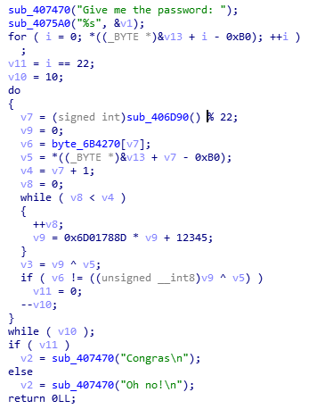
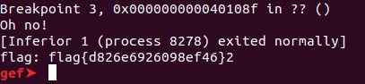

举例说明gdb脚本以及Python脚本的使用。
题目
以攻防世界reverse中的hackme题目为例，题目思路比较简单。就是异或计算。

但是题目中有点陷阱，程序中只对字符串进行了10次比较，达不到其需要的字符串长度，需要更改循环次数以完成对输入的完整检查。
题中每次比较的位置是不定的，而且存在重复比较，若手动处理比较麻烦。
gdb脚本
预设了三个断点
1
2
3
4
5
6
7
8
9
10
11
12
13
14
15
| def pos
> run
> set $i=100
> while($i)
> set $tmp=$rax
> c
> set $target= $al;
> c
> set $tartget= $target ^ $dl;
> printf "pos:%d,target:%d ",$tmp,$target
> set $i--
> c
>end
>end
pos
|
python脚本
预设了三个断点
1
2
3
4
5
6
7
8
9
10
11
12
13
14
15
16
17
18
19
20
21
22
23
24
| import gdb
class Pos(gdb.Command):
def __init__(self):
super(self.__class__,self).__init__("pos",gdb.COMMAND_USER)
def invoke(self,args,from_tty):
ss=list("01234567890123456789012")
gdb.execute("run")
i=100
while i:
pos=gdb.parse_and_eval("$eax")
gdb.execute("c")
target=gdb.parse_and_eval("$al")
gdb.execute("c")
target=target ^ gdb.parse_and_eval("$dl")
gdb.execute("c")
ss[pos]=chr(target)
i-=1
print("flag: "+"".join(ss))
Pos()
|
两秒出结果，舒服。
